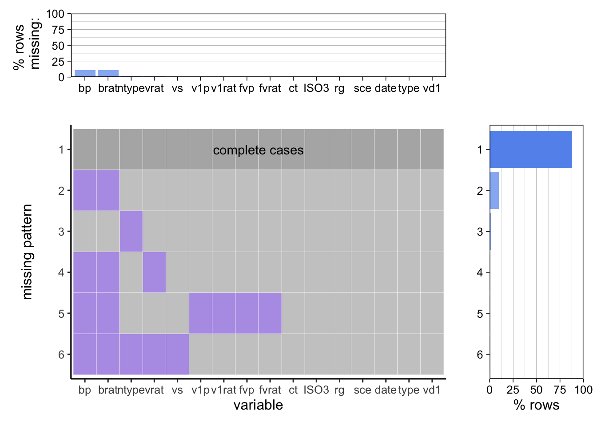
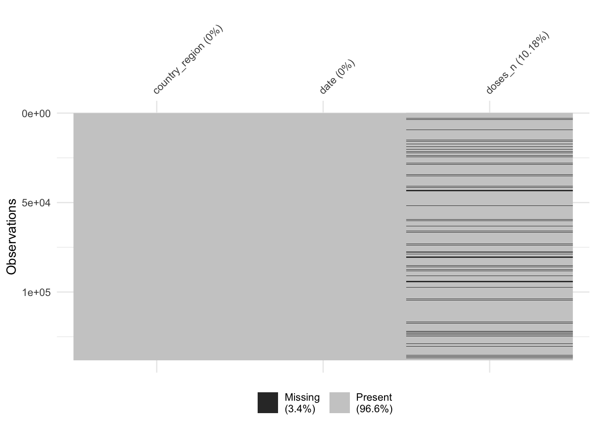

Chapter 3 Data
3.1 Sources
We collect data from WHO for COVID-19 Dashboard and CDC & JHU data for United States COVID-19 analysis. We download the csv files from the websites.
3.1.1 WHO COVID-19 Dashboard
There is a csv file for the cumulative cases and deaths data of each country. The country names, iso number, date reported are also included in the csv file. There are 239 records of countries and regions, including Global category and others category.
There is a csv file for global vaccination data. We can load the number of persons vaccinated with different numbers of vaccines and vaccination rates of different countries from the file. The country names, WHO region, iso number, date reported are also included in the csv file. There are 229 records of countries and regions.
3.1.2 CDC & JHU Data for United States COVID-19 Analysis
The vaccination data provides the vaccination efforts across the United States and is downloaded as csv file. It provides the doses attributed, doses administered and vaccination rate with different age groups by state. There are 54 records of jurisdiction (State/Territory).
The global confirmed cases data provides the daily confirmed cases, reported at the country/region level. The province/state, country/region, date are included the csv file.
3.2 Cleaning / transformation
3.2.1 COVID-19 Cases and Deaths
3.2.1.1 Distribution by Space
The cumulative cases and deaths data from WHO can be loaded from the csv files directly. Then we select infection rates, fatality rates, country names and country iso numbers from the data frame. For the vaccine data, we load the csv file and select country names, country numbers and persons with 1+ doses of 100 population from the data frame. Then we store the data frames in Rdata files for future use.
3.2.2 Distribution by Time
To analyze the global spread of COVID-19, it’s helpful to observe the reported cases and deaths as a three-year time series from early 2020 to late 2020. The data is collected from the report of different countries separately, so we first sum them up to obtain the global reported data by day. We notice that there is a delay in data collection on weekends in the data set, which may lead to an undesired cyclic pattern. To deal with that, we also build another data frame by grouping the reported date by week. We believe this weekly reported data frame may bring clearer insights of the data.
We also extract the U.S. data from the global data set, and compute the reported cases and deaths by day and week. It will provide a deeper insight in our following analysis.
3.2.3 U.S. Vaccination Data
3.2.3.1 U.S. Vaccination Compared to the Global Data
To analyze the U.S. vaccination rate, we tried to compare it to those of other countries in the world. We used the WHO global vaccination data, which provides detailed vaccination data divided by countries. For each country, it gives the total vaccinations, the vaccinated rate, fully vaccinated rate as well as the main type of vaccines the country uses. In our analysis, we only care about the vaccinated rate and fully vaccinated rate of different countries. Another issue of the data is missing values and outliers. There’s no fully vaccinated rate for Guernsey, and the fully vaccinated rate of Eritrea, Brunei Darussalam, Gibraltar, Palau and Tokelau are more than 100%. So we drop these six rows.
3.2.3.2 Vaccination State in U.S. Populations
We further made use of the global vaccination data set by extracting the U.S. data, and calculating the proportion of vaccination, full vaccination, boosting in the U.S. population. The data frame consists of 5 columns: ‘country’, ‘not_vaccinated’, ‘vaccinated’, ‘fully_vaccinated’, and ‘boosted’. We transformed it to tidy form which only contains 3 columns for further graphing.
3.2.3.3 U.S. Vaccination by Age
For the vaccination rate of different age groups, we use the data from CDC (Centers of Disease Control and Prevention). It provides vaccinated and fully vaccinated rate by age. As each age group yields several observations from different date, we use the data from the latest update as the vaccinated rate is a cumulative variable. Besides, there are no reported data from children less than 5 years old, as they are too young to get vaccinated, so we only focus on 6 age groups: ‘5 - 1’,‘12 - 17’,‘18 - 24’,‘25 - 49’, ‘50 - 64’, and ‘65+’.
3.2.3.4 U.S. Vaccination by State
To analyze the vaccination progress across the United States, we used CDC united states vaccination data. It provides the detailed vaccination rate by each jurisdiction. For each jurisdiction, it specifies the percent of residents vaccinated, doses administered, doses distributed, and fully vaccination rate. We compared the percent of people fully vaccinated and US average fully vaccination rate in the next chapter.
3.2.3.5 Vaccination and Reported Cases
To analyze the vaccination effort in the United States, we used JHU COVID-19 cases and CDC vaccination data. The COVID-19 cases data provides the reported cases from Jan 2020 to now. The data is collected from the report of different countries separately. We calculated the daily new cases and weekly new cases to gain insights from it. The global vaccination data provides the reported doses from Dec 2020 to now for each country. We also calculated the daily new doses and weekly new doses for the vaccination effort in United States.
3.3 Missing value analysis
3.3.1 WHO COVID-19 dashboard
There are no NAN values in the cumulative cases and deaths data. But there are 4 countries/regions with 0 cases and deaths.They are Democratic People’s Republic of Korea, Saint Helena, Tokelau and Turkmenistan. It implies that they didn’t report to the WHO and their data are missing. There is a category “other” in the table and it may contain data of countries not included in the 237 countries/ regions.
There are 8 countries/regions which have cumulative cases and deaths data but don’t have vaccination data. By comparing the two table we can find the countries are Bonaire, Sint Eustatius and Saba, Democratic Republic of the Congo, Holy See, Mayotte, Réunion, Saint Barthélemy, Saint Martin, and Saint Pierre and Miquelon. They are relatively small regions which may lack relevant data.
3.3.2 WHO Vaccination Data
There are some missing values in the WHO global vaccination data set. More than 87% of the observations are complete cases, while about 10% of the observations have missing values on PERSONS_BOOSTER_ADD_DOSE (bp) and PERSONS_BOOSTER_ADD_DOSE_PER100 (brat), probably because some countries have not promoted boosters. Very few rows have missing values on other variables such as VACCINES_USED (type). But fortunately, as we mainly focus on fully vaccinated rate in the global data, we have almost complete data in all the countries. We also notice that the US data is complete in this data set, which can be used for further analysis.

3.3.3 CDC Global Vaccine Data
As we can see from the chart, the missing values consist of 3.4% of the dataset. It is an univariate missing pattern where missing data occur only in doses_n. There are about 70% missing data around January 2021. Missing data gradually decrease over time and remain very low starting from June 2021. The main reason could many countries lack access to vaccines at the beginning of the approval of COVID-19 vaccines due to the delays and shortages. Many countries have sufficient vaccines over time, the missing data decrease as well.
